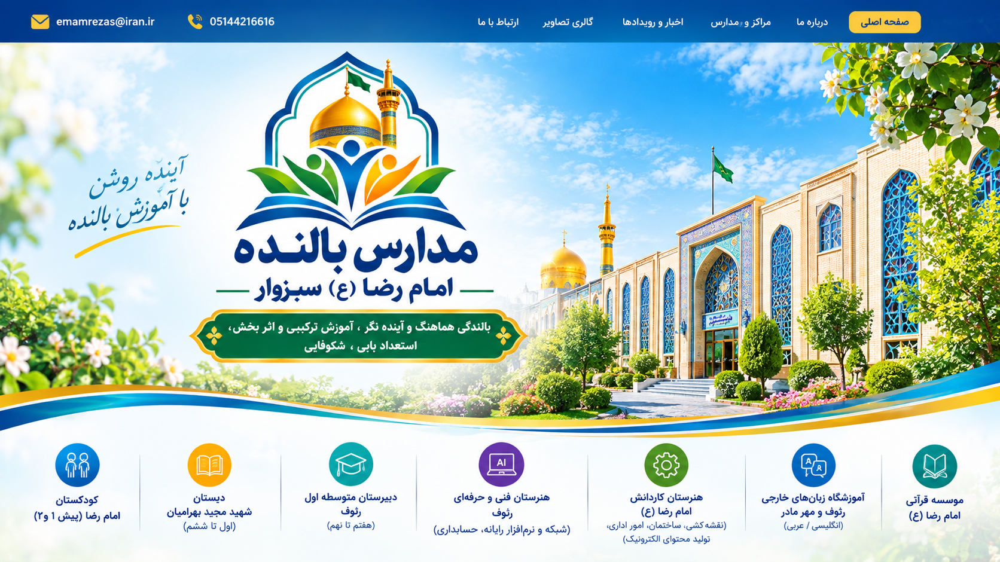

انسانمحوری
باور به ظرفیتهای انسان و نگاه کردن به دانشآموز به عنوان انسانی توانمند، دارای استعداد و برخوردار از امکان رشد.

مجتمع فرهنگی آموزشی امام رضا (ع) سبزوار
مدارس امام رضا از کودکستان تا دانشگاه در خدمت بالندگی
مدارس بالنده امام رضا (ع) سبزوار با رویکردی فرهنگی، آموزشی، حرفهای و انسانمحور، تلاش میکنند مدرسه را از صرف انتقال دانش به محیطی برای رشد، یادگیری، تجربه، مسئولیتپذیری و شکوفایی استعدادهای انسان تبدیل کنند.
انسان پیش از آنکه مسئله باشد، ظرفیت است.
در این نگاه، تغییر نگاه به انسان، پیششرط تغییر مدرسه است. مدرسه بالنده تلاش میکند فرصتهایی واقعی برای یادگیری، تجربه، مشارکت، بازآفرینی و رشد در اختیار انسان قرار دهد.
باور به ظرفیتهای انسان و نگاه کردن به دانشآموز به عنوان انسانی توانمند، دارای استعداد و برخوردار از امکان رشد.
پیوند دادن دانش با تجربه، عمل، پژوهش، پروژه و مسائل واقعی زندگی.
پرورش انسانهایی توانمند برای زندگی، کار، مسئولیتپذیری، کارآفرینی و مواجهه هوشمندانه با آینده.
مسیر رشد انسان در یک منظومه آموزشی، فرهنگی و مهارتی
آغاز مسیر رشد، بازی، تجربه و کشف استعدادها
یادگیری، تجربه، مهارت و پرورش شخصیت
شناخت توانمندیها، هویتیابی و آماده شدن برای انتخاب مسیر آینده
شبکه و نرمافزار رایانه و حسابداری؛ پیوند آموزش با مهارت و بازار کار
نقشهکشی ساختمان، امور اداری و تولید محتوای آموزش الکترونیک
آموزش زبان انگلیسی و عربی برای ارتباط مؤثرتر با جهان
مدرسه بالنده، مدرسهای است که انسان را محور تحول میداند و با ایجاد فرصتهای متنوع برای یادگیری، تجربه، مشارکت، بازآفرینی و شکوفایی، زمینه رشد همهجانبه دانشآموزان را فراهم میکند.
«مدرسه بالنده، دانش را از ذهن به میدان زندگی میآورد.»
«تغییر نگاه به انسان، پیششرط تغییر مدرسه است.»
مؤلفههایی برای تبدیل نگاه انسانمحور به عمل تربیتی و مدیریتی
روایت تجربههای واقعی مدیران، معلمان، دانشآموزان و خانوادهها در مسیر بالندگی مدرسه؛ تجربههایی که نشان میدهند اعتماد، فرصت دوباره، گفتوگو و همراهی چگونه میتوانند مسیر رشد انسان را تغییر دهند.
در مدرسه بالنده، تجربههای واقعی مدرسه فقط خاطره نیستند؛ بلکه میتوانند به فرصتی برای یادگیری، پژوهش، اصلاح و بازآفرینی تبدیل شوند.
مقالات، پژوهشهای مدرسه و آثار علمی مرتبط با نظریه مدرسه بالنده و تحول انسانمحور در تعلیم و تربیت در این بخش معرفی و منتشر خواهند شد.
از نگاه متفاوت به انسان تا الگوی انسانمحور برای تحول بنیادین پرورشی
مدیر و معلم بالنده، صرفاً انتقالدهنده دانش یا کنترلکننده رفتار نیست؛ بلکه دوست صمیمی، تسهیلگر، راهنما و همراه رشد انسان است.
«راهنمای باتجربه وابستگی ایجاد نمیکند؛ ظرفیت ایجاد میکند.»
خانواده، شریک واقعی مدرسه در مسیر رشد، یادگیری و شکوفایی فرزندان است. همراهی خانواده و مدرسه میتواند فرصتهای بیشتری برای شناخت، رشد و بالندگی انسان فراهم کند.
پروژه جایگزین یادگیری نیست؛ پروژه یکی از راههای عمیقتر شدن یادگیری است.
کار در طول آموزش نیست؛ در دل آموزش است.
فناوری باید در خدمت انسان قرار گیرد، نه انسان در خدمت فناوری.
خراسان رضوی، شهرستان سبزوار، بلوار شهید چمران، خیابان ابن یمین شرقی
تلفن: 05144216616
ایمیل: emamrezas@iran.ir